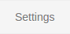
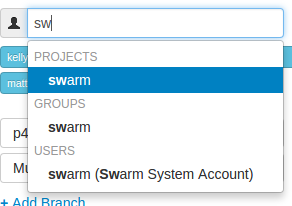
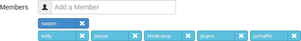
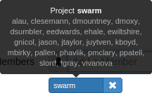
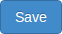

Membership
Membership in a Swarm project identifies users as belonging to the project, making them part of the team.
The only notable differences between project members and non-members is that members receive notifications when new code reviews are started, member avatars appear on the project's page, and members can transition reviews to other states. Non-members can transition reviews they have authored.
There are two ways to become a member of a project in Swarm:
-
Add a project and make yourself a member.
-
Ask a member of an existing project to add you as a member.
Note
If the project has any owners specified, you need to ask a project owner to add you as a member.
Add a member
If you are an owner of a project, or a member of a project without specified owners:
-
Visit the project page that needs the new member.
-
 Click in the project's toolbar.
-
 The Members text field lets you specify a Swarm project, Perforce group, or Perforce user to add to the members for this project. The field auto-suggests project ids, group ids, and userids by matching what you have typed so far against the list of users in the Helix Versioning Engine.
When you specify a project or group, all of the members of that project or group become members of this project. Swarm does not display all of the individual users, but it does provide a visual separation: project or group names are displayed first, with a darker blue background.

When you hover your mouse over a member project or group, a tooltip appears displaying up to 100 of the userids of the project's or group's users:

-
 Click .
Remove a member
If you are an owner of a project, or a member of a project without specified owners:
-
Visit the project page that has a member you want to remove.
-
Click in the project's toolbar.
-
Known members of the project are displayed beneath the Members text field, with a medium blue button representing projects or groups, and a light blue button representing individual users. Click the next to the project id, group id, or userid you want to remove.
-
Click .
Caution
You are able to remove your own membership or ownership. Doing so could prevent you from managing the project.
Owners
A project owner is a Perforce user that controls the configuration for a project. An owner does not need to be a member of a project, but once Only Owners and Administrators can edit the project has been set, only an owner or user with admin privileges in the Helix Versioning Engine can edit any project settings.
Moderators
A project moderator is a user assigned to moderate reviews for a specific branch associated with a project.
When Only Moderators can approve or reject reviews is set for a project branch, changing the state of any review associated with the moderated branch is restricted as follows:
-
Only moderators can approve or reject the review. Moderators can also transition a review to any other state.
-
The review's author, when she is not a moderator, can change the review's state to Needs Review, Needs Revision, Archived, and can attach committed changelists.
Normally, the review's author cannot change the review's state to Approved or Rejected on moderated branches. However, authors that are also moderators have moderator privileges, and may approve or reject their own review.
When
disable_self_approveis enabled, authors who are moderators (or even users with admin privileges) cannot approve their own reviews. -
Project members can change the review's state to Needs Review or Needs Revision, and can attach committed changelists. Project members cannot change the review's state to Approved, Rejected, or Archived.
-
Users that are not project members, moderators, or the review's author cannot transition the review's state.
-
For the review's author and project members, if a review is not in one of their permitted states, for example if the review's state is Rejected, they cannot transition the review to another state.
These restrictions have no effect on who can start a review.